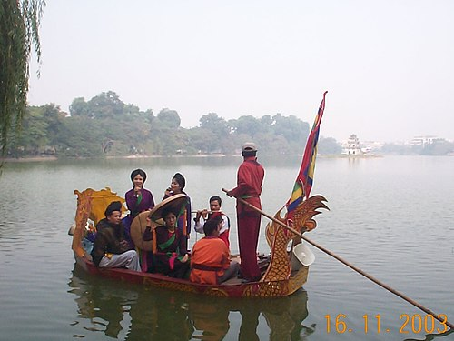

Dân ca quan họ là một dạng âm nhạc truyền thống của Việt Nam, phổ biến ở vùng Bắc Bộ. Nó thường được trình diễn bởi các cặp đôi hát đối đáp, thể hiện tình cảm và kỹ năng âm nhạc của họ.
Nếu bạn muốn biết thêm về dân ca quan họ, bạn có thể tham khảo thêm tại các nguồn thông tin trực tuyến hoặc đến các sự kiện văn hóa truyền thống tại vùng Bắc Bộ.